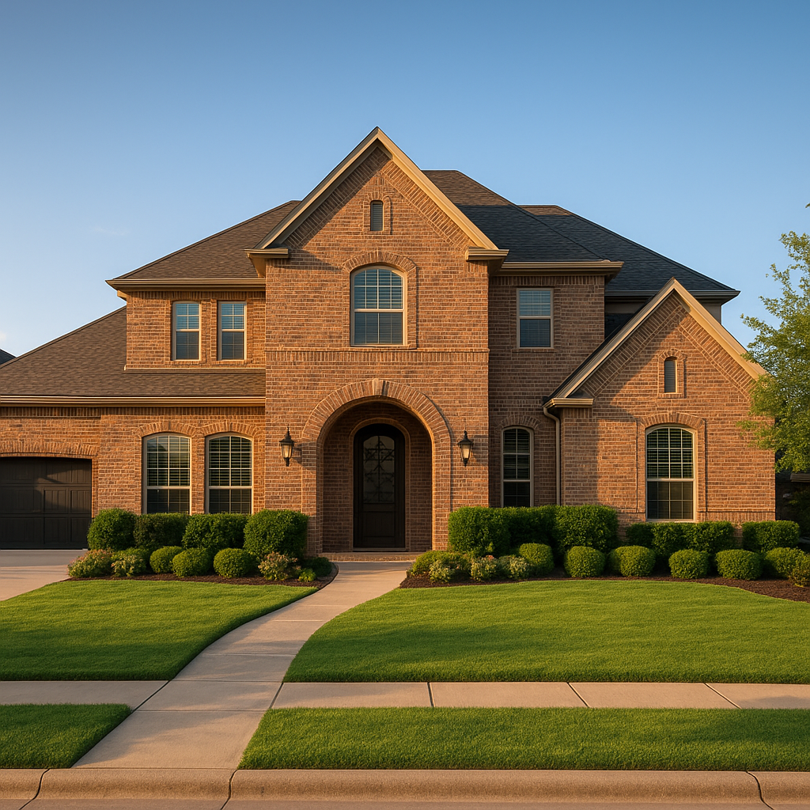

I'm Bond Peter Njoku (NMLS #2670329), and Prosper is one of the fastest-growing markets I work in — and one of the most misunderstood by first-time buyers who assume it's out of reach. Prosper ISD is consistently rated one of the top school districts in North Texas, home prices typically run $450,000–$600,000, and the 2026 conforming loan limit of $806,500 means most Prosper purchases don't require jumbo financing at all. Here's what first-time buyers actually need to know before searching Prosper listings.
What does a home in Prosper TX actually cost in 2026?
Prosper's pricing spans a wide range. Older sections of town and townhome-style product start around $450,000. Established master-planned communities like Windsong Ranch and Star Trail run $500,000–$600,000+ for single-family homes, and larger new-construction lots can exceed that. At the low end of $450,000 with 5% down ($22,500), you're looking at roughly $2,850/month in principal and interest at 7.0%.
Is Prosper ISD worth the price premium?
For most families I work with, yes — it's the single biggest reason buyers choose Prosper over cheaper nearby markets. Prosper ISD is rated among the top school districts in the Metroplex, and that reputation directly supports resale value, which matters if this isn't your forever home. I help buyers cross-reference specific streets against Prosper ISD attendance zones before they write an offer, since boundaries can shift year to year as the district grows.
What loan options fit Prosper's price tiers?
| Price Tier | Best Loan Fit | Why |
|---|---|---|
| Up to $524,225 | FHA or Conventional | Within FHA county limit — 3.5% down possible |
| $524,225–$806,500 | Conventional | Above FHA limit but under conforming loan limit |
| Above $806,500 | Jumbo | Exceeds 2026 conforming limit — different underwriting and rate |
Most first-time buyers I work with in Prosper land in the first two tiers, meaning a jumbo loan usually isn't necessary. I always run FHA and conventional side by side for buyers under $524,225 — the right answer depends on your credit score more than your price point.
Can first-time buyers in Prosper get down payment assistance?
Yes, if your household income falls under the Collin County limit of approximately $119,700 for 2026. Given Prosper's price range, DPA tends to work best on the lower end of the market — an FHA purchase in the $450,000–$500,000 range paired with a TSAHC or TDHCA grant makes a meaningful dent in your out-of-pocket cash. On a $475,000 FHA purchase, a 3–5% TSAHC grant translates to roughly $14,250–$23,750 toward your down payment and closing costs. See my full down payment assistance guide for program details.
What should first-time buyers know about Prosper's neighborhoods?
Windsong Ranch and Star Trail are the two communities I get asked about most — both offer resort-style amenities (pools, trails, on-site elementary schools) but carry HOA dues that need to be factored into your monthly budget and debt-to-income ratio, typically $700–$1,200 per year depending on the community. Older, less amenity-heavy sections of Prosper closer to town can offer meaningfully lower entry prices with fewer HOA costs if amenities aren't your priority.
A recent Prosper first-time buyer close
Earlier this year I worked with a young couple relocating from an apartment in Plano — combined income around $112,000, credit scores in the mid-680s, targeting a $465,000 home in Prosper. We used FHA financing at 3.5% down and stacked it with a TSAHC grant since their income landed under the Collin County limit. The grant covered nearly all of their closing costs, and their final PITI payment came in around $3,650/month — tight, but workable given what they'd been paying for a two-bedroom apartment plus a storage unit.
Frequently Asked Questions
What is the median home price in Prosper TX in 2026?
Prosper home prices typically range from $450,000 to $600,000 in 2026, with newer master-planned communities on the higher end and older sections of town on the lower end. I'm Bond Peter Njoku (NMLS #2670329) — call or text 469-545-7180 and I'll show you what that range looks like as a monthly payment based on your down payment and credit profile.
Is Prosper ISD a good school district?
Yes — Prosper ISD is one of the highest-rated school districts in North Texas and a primary reason families relocate here from Dallas, Plano, and Frisco. It's consistently one of the top draws I hear from buyers when I ask why they're targeting Prosper specifically. I'm Bond Peter Njoku (NMLS #2670329) — call or text 469-545-7180 and I can help you match a home search to specific Prosper ISD attendance zones.
Can first-time buyers get down payment assistance in Prosper TX?
Yes, if your household income falls under the Collin County limit of approximately $119,700 for 2026. Given Prosper's price point, DPA works best for buyers using FHA financing on the lower end of Prosper's price range rather than $500,000+ homes, since the assistance amount is a percentage of the loan. I'm Bond Peter Njoku (NMLS #2670329) — call or text 469-545-7180 and I'll check your specific eligibility.
Do I need a jumbo loan to buy in Prosper TX?
Not usually. The 2026 conforming loan limit is $806,500, and most Prosper homes fall under that threshold, so a standard conventional loan works for the majority of purchases. Jumbo financing only becomes necessary for homes priced above roughly $806,500 with less than 20% down. I'm Bond Peter Njoku (NMLS #2670329) — call or text 469-545-7180 and I'll tell you exactly which loan type fits your target price.
Ready to buy your first home in Prosper?
I'm Bond Peter Njoku (NMLS #2670329). I'll walk you through FHA, conventional, and DPA options for Prosper's price range and get you pre-approved. Call or text me at 469-545-7180, message me on WhatsApp, or start your pre-approval online.